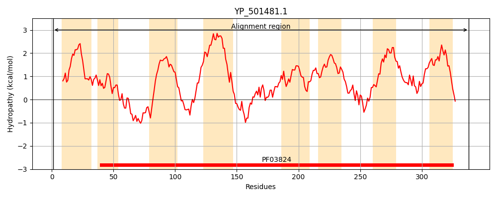
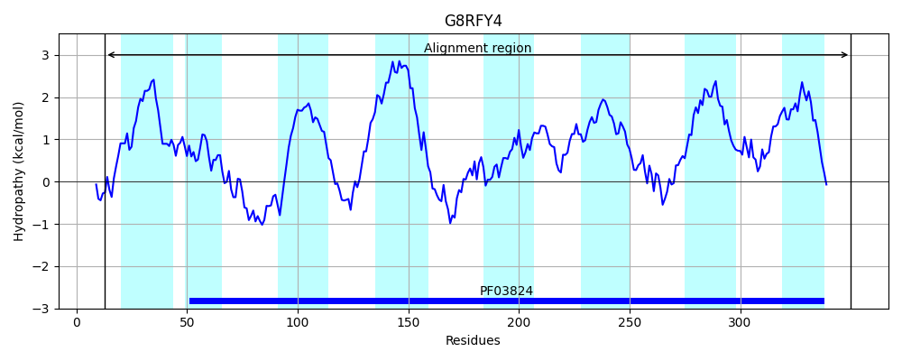
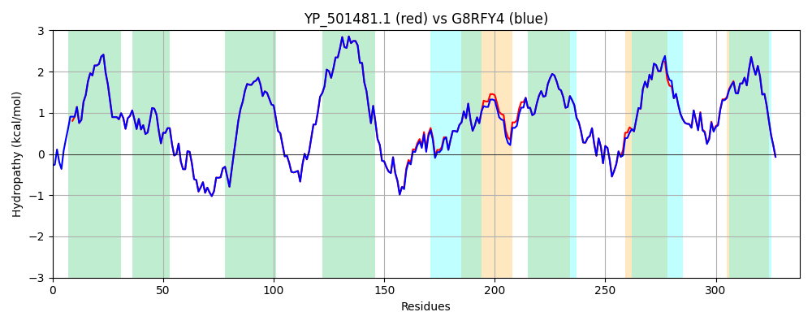

Hit Accession: G8RFY4
Hit TCID: 2.A.52.1.5
Hit Description: gnl|BL_ORD_ID|4868 gnl|TC-DB|G8RFY4|2.A.52.1.5 HoxN/HupN/NixA family nickel/cobalt transporter OS=Staphylococcus aureus subsp. aureus M013 GN=M013TW_2680 PE=4 SV=1
Mach Len: 338
e:0.000000
Query TMS Count : 8
Hit TMS Count: 8
TMS-Overlap Score: 7.900000
Predicted Substrates:CHEBI:25517;nickel(2+)
BLAST Alignment:
Score: 1694 , Bit scores: 657 bits, E-value: 0.0e+00, Alignment length: 338, Percentage identity: 98
Query: 1 MTVFKNERLSWLPYIAIVILLHVIGFSFLWIAGKDHHILFGMGILAYTLGLRHAFDADHIAAIDNTVRKLLQQRKDPSGVGFYFSIGHSSVVFLMAVFLGVSVKWAKDELPHFQDIGGTIGTLVSGFFLVLIGVLNLIILISLINLFAKLRREHIEEAEVDALLESRGLVSRFVGPYFKLITRSWHVLPLGFLFGLGFDTASEIALLALSSGASQQAISFIGILSLPILFASGMSLLDTLDGVVMKYAYNWAFFNPIRKIYYNITITAISVMAALVIGMIELLQILADKLDLHGAFWAFIGSIEFDYLGYILVALFLITWLISSLIWKFGRIEHKWSR 338
+TVFKNERLSWLPYIAIVILLHVIGFSFLWIAGKDHHILFGMGILAYTLGLRHAFDADHIAAIDNTVRKLLQQRKDPSGVGFYFSIGHSSVVFLMAVFLGVSVKWAKDELPHFQDIGGTIGTLVSGFFLVLIGVLNLIILISLINLFAKLRREHIEEAEVDALLESRG VSRFVGPYFKLITRSWHVLPLGFLFGLGFDTASEI LLALSSGASQQAISFIGILSLPILFASGMSLLDTLDGVVMKYAYNWAFFNPIRKIYYNITIT ISV+AALVIGMIELLQILADKLDLHGAFWAFI SIEFDYLGYILVALFLITWLISSLIWKFGRIEHKWS+
Sbjct: 13 LTVFKNERLSWLPYIAIVILLHVIGFSFLWIAGKDHHILFGMGILAYTLGLRHAFDADHIAAIDNTVRKLLQQRKDPSGVGFYFSIGHSSVVFLMAVFLGVSVKWAKDELPHFQDIGGTIGTLVSGFFLVLIGVLNLIILISLINLFAKLRREHIEEAEVDALLESRGFVSRFVGPYFKLITRSWHVLPLGFLFGLGFDTASEITLLALSSGASQQAISFIGILSLPILFASGMSLLDTLDGVVMKYAYNWAFFNPIRKIYYNITITTISVIAALVIGMIELLQILADKLDLHGAFWAFISSIEFDYLGYILVALFLITWLISSLIWKFGRIEHKWSK 350 | Protein Hydropathy Plots: |
|---|
|  |  |
Pairwise Alignment-Hydropathy Plot:
|
|---|
|  |